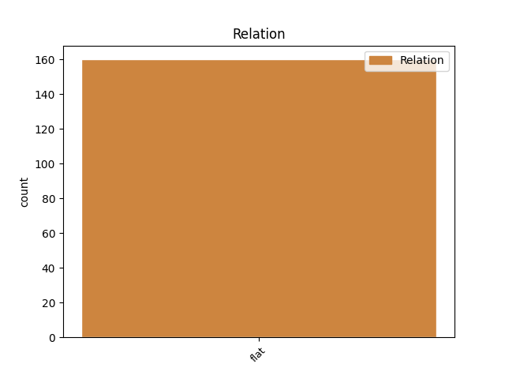
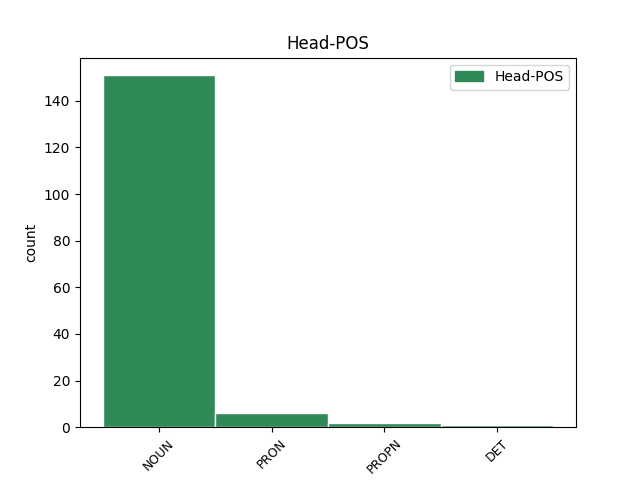
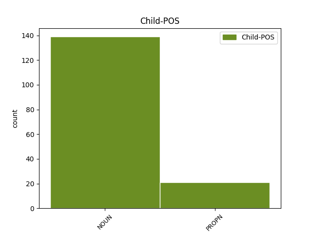

Distribution of features within this leaf



Agreement Rules sorted by frequency.
- When the dependent token is the flat multiword expression(flat) of the head token, and the head token is NOUN and the dependent token is NOUN.
1 3 _ _ _ _ 0 _ _ _
2 . _ _ _ _ 0 _ _ _
3 Komiteto _ _ _ _ 0 _ _ _
4 sprendimai _ _ _ _ 0 _ _ _
5 Aplinkos _ _ _ _ 0 _ _ _
6 ministerijai _ _ _ _ 0 _ _ _
7 ir _ _ _ _ 0 _ _ _
8 kitiems _ _ _ _ 0 _ _ _
9 Programos _ _ _ _ 0 _ _ _
10 dalyviams dalyvis NOUN dkt.vyr.dgs.N. Case=Dat|Gender=Masc|Number=Plur 0 _ _ _
11 ( _ _ _ _ 0 _ _ _
12 tame _ _ _ _ 0 _ _ _
13 tarpe _ _ _ _ 0 _ _ _
14 Programą _ _ _ _ 0 _ _ _
15 įgyvendinančiai _ _ _ _ 0 _ _ _
16 agentūrai agentūra NOUN dkt.mot.vns.N. Case=Dat|Gender=Fem|Number=Sing 10 flat _ SpaceAfter=No
17 ) _ _ _ _ 0 _ _ _
18 yra _ _ _ _ 0 _ _ _
19 patariamojo _ _ _ _ 0 _ _ _
20 pobūdžio _ _ _ _ 0 _ _ _
21 . _ _ _ _ 0 _ _ _
1 Direktorius direktorius NOUN dkt.vyr.vns.V. Case=Nom|Gender=Masc|Number=Sing 0 _ _ _
2 Algirdas _ _ _ _ 0 _ _ _
3 Kunčinas Kunčinas PROPN dkt.tikr.vyr.vns.V. Case=Nom|Gender=Masc|Number=Sing 1 flat _ _
1 Jų jis PRON įv.vyr.dgs.K. Case=Gen|Definite=Ind|Gender=Masc|Number=Plur|Person=3|PronType=Prs 0 _ _ _
2 galima _ _ _ _ 0 _ _ _
3 pasiruošti _ _ _ _ 0 _ _ _
4 ir _ _ _ _ 0 _ _ _
5 žiemai _ _ _ _ 0 _ _ _
6 – _ _ _ _ 0 _ _ _
7 obuolių _ _ _ _ 0 _ _ _
8 sūrių sūris NOUN dkt.vyr.dgs.K. Case=Gen|Gender=Masc|Number=Plur 1 flat _ SpaceAfter=No
9 , _ _ _ _ 0 _ _ _
10 trintų _ _ _ _ 0 _ _ _
11 uogų _ _ _ _ 0 _ _ _
12 su _ _ _ _ 0 _ _ _
13 nedideliu _ _ _ _ 0 _ _ _
14 kiekiu _ _ _ _ 0 _ _ _
15 cukraus _ _ _ _ 0 _ _ _
16 . _ _ _ _ 0 _ _ _
1 Egidijus _ _ _ _ 0 _ _ _
2 Barcevičius Barcevičius PROPN dkt.tikr.vyr.vns.V. Case=Nom|Gender=Masc|Number=Sing 0 _ _ _
3 ir _ _ _ _ 0 _ _ _
4 Dovilė _ _ _ _ 0 _ _ _
5 Žvalionytė _ _ _ _ 0 _ _ _
6 ( _ _ _ _ 0 _ _ _
7 moksliniai _ _ _ _ 0 _ _ _
8 redaktoriai redaktorius NOUN dkt.vyr.dgs.V. Case=Nom|Gender=Masc|Number=Plur 2 flat _ SpaceAfter=No
9 ) _ _ _ _ 0 _ _ _
10 , _ _ _ _ 0 _ _ _
11 Užburtas _ _ _ _ 0 _ _ _
12 ratas _ _ _ _ 0 _ _ _
1 Kiekvienas kiekvienas DET įv.vyr.vns.V. Case=Nom|Definite=Ind|Gender=Masc|Number=Sing|PronType=Tot 0 _ _ _
2 iš _ _ _ _ 0 _ _ _
3 jų _ _ _ _ 0 _ _ _
4 , _ _ _ _ 0 _ _ _
5 net _ _ _ _ 0 _ _ _
6 ir _ _ _ _ 0 _ _ _
7 elementarus _ _ _ _ 0 _ _ _
8 chuliganėlis chuliganėlis NOUN dkt.vyr.vns.V. Case=Nom|Gender=Masc|Number=Sing 1 flat _ _
9 ar _ _ _ _ 0 _ _ _
10 alaus _ _ _ _ 0 _ _ _
11 kiosko _ _ _ _ 0 _ _ _
12 pardavėja _ _ _ _ 0 _ _ _
13 , _ _ _ _ 0 _ _ _
14 kurie _ _ _ _ 0 _ _ _
15 makaluoja _ _ _ _ 0 _ _ _
16 rankomis _ _ _ _ 0 _ _ _
17 ir _ _ _ _ 0 _ _ _
18 spiegia _ _ _ _ 0 _ _ _
19 prie _ _ _ _ 0 _ _ _
20 roko _ _ _ _ 0 _ _ _
21 koncerto _ _ _ _ 0 _ _ _
22 scenos _ _ _ _ 0 _ _ _
23 , _ _ _ _ 0 _ _ _
24 turi _ _ _ _ 0 _ _ _
25 tuos _ _ _ _ 0 _ _ _
26 pačius _ _ _ _ 0 _ _ _
27 poreikius _ _ _ _ 0 _ _ _
28 kaip _ _ _ _ 0 _ _ _
29 ir _ _ _ _ 0 _ _ _
30 tie _ _ _ _ 0 _ _ _
31 , _ _ _ _ 0 _ _ _
32 kurie _ _ _ _ 0 _ _ _
33 pasimėgaudami _ _ _ _ 0 _ _ _
34 skaito _ _ _ _ 0 _ _ _
35 Proustą _ _ _ _ 0 _ _ _
36 ar _ _ _ _ 0 _ _ _
37 Borgesą _ _ _ _ 0 _ _ _
38 . _ _ _ _ 0 _ _ _
1 Autorė _ _ _ _ 0 _ _ _
2 lygina _ _ _ _ 0 _ _ _
3 vakarietiškąją _ _ _ _ 0 _ _ _
4 , _ _ _ _ 0 _ _ _
5 arba _ _ _ _ 0 _ _ _
6 anglosaksiškąją _ _ _ _ 0 _ _ _
7 , _ _ _ _ 0 _ _ _
8 tradiciją _ _ _ _ 0 _ _ _
9 su _ _ _ _ 0 _ _ _
10 Rytų _ _ _ _ 0 _ _ _
11 Europos Europa PROPN dkt.tikr.mot.vns.K. Case=Gen|Gender=Fem|Number=Sing 0 _ _ _
12 ( _ _ _ _ 0 _ _ _
13 daugiausia _ _ _ _ 0 _ _ _
14 Lenkijos Lenkija PROPN dkt.tikr.mot.vns.K. Case=Gen|Gender=Fem|Number=Sing 11 flat _ _
15 ir _ _ _ _ 0 _ _ _
16 Lietuvos _ _ _ _ 0 _ _ _
17 ) _ _ _ _ 0 _ _ _
18 tradicijomis _ _ _ _ 0 _ _ _
19 . _ _ _ _ 0 _ _ _
Disagree Examples:
1 Knygos _ _ _ _ 0 _ _ _
2 pratarmėje _ _ _ _ 0 _ _ _
3 pristatydamos _ _ _ _ 0 _ _ _
4 šį _ _ _ _ 0 _ _ _
5 kokybinį _ _ _ _ 0 _ _ _
6 metodą _ _ _ _ 0 _ _ _
7 , _ _ _ _ 0 _ _ _
8 autorės _ _ _ _ 0 _ _ _
9 pažymi _ _ _ _ 0 _ _ _
10 ir _ _ _ _ 0 _ _ _
11 kitus _ _ _ _ 0 _ _ _
12 jo _ _ _ _ 0 _ _ _
13 aspektus _ _ _ _ 0 _ _ _
14 , _ _ _ _ 0 _ _ _
15 žyminčius _ _ _ _ 0 _ _ _
16 tyrimo _ _ _ _ 0 _ _ _
17 proceso _ _ _ _ 0 _ _ _
18 specifiką _ _ _ _ 0 _ _ _
19 ir _ _ _ _ 0 _ _ _
20 jos _ _ _ _ 0 _ _ _
21 keliamus _ _ _ _ 0 _ _ _
22 reikalavimus reikalavimas NOUN dkt.vyr.dgs.G. Case=Acc|Gender=Masc|Number=Plur 0 _ _ _
23 tyrėjui _ _ _ _ 0 _ _ _
24 ( _ _ _ _ 0 _ _ _
25 kūrybiškumas kūrybiškumas NOUN dkt.vyr.vns.V. Case=Nom|Gender=Masc|Number=Sing 22 flat _ SpaceAfter=No
26 , _ _ _ _ 0 _ _ _
27 gebėjimas _ _ _ _ 0 _ _ _
28 įvertinti _ _ _ _ 0 _ _ _
29 iškylančias _ _ _ _ 0 _ _ _
30 sąveikas _ _ _ _ 0 _ _ _
31 , _ _ _ _ 0 _ _ _
32 reflektuoti _ _ _ _ 0 _ _ _
33 ir _ _ _ _ 0 _ _ _
34 pan _ _ _ _ 0 _ _ _
35 . _ _ _ _ 0 _ _ _
36 ) _ _ _ _ 0 _ _ _
37 . _ _ _ _ 0 _ _ _
1 Apibrėždamos _ _ _ _ 0 _ _ _
2 konkrečiau _ _ _ _ 0 _ _ _
3 šių _ _ _ _ 0 _ _ _
4 tyrimų _ _ _ _ 0 _ _ _
5 lauką laukas NOUN dkt.vyr.vns.G. Case=Acc|Gender=Masc|Number=Sing 0 _ _ _
6 ( _ _ _ _ 0 _ _ _
7 „ _ _ _ _ 0 _ _ _
8 šeiminis _ _ _ _ 0 _ _ _
9 pasaulis pasaulis NOUN dkt.vyr.vns.V. Case=Nom|Gender=Masc|Number=Sing 5 flat _ _
10 “ _ _ _ _ 0 _ _ _
11 , _ _ _ _ 0 _ _ _
12 arba _ _ _ _ 0 _ _ _
13 , _ _ _ _ 0 _ _ _
14 šeiminio _ _ _ _ 0 _ _ _
15 gyvenimo _ _ _ _ 0 _ _ _
16 procesai _ _ _ _ 0 _ _ _
17 , _ _ _ _ 0 _ _ _
18 patirtys _ _ _ _ 0 _ _ _
19 , _ _ _ _ 0 _ _ _
20 sąveikose _ _ _ _ 0 _ _ _
21 kuriamos _ _ _ _ 0 _ _ _
22 reikšmės _ _ _ _ 0 _ _ _
23 ir _ _ _ _ 0 _ _ _
24 jų _ _ _ _ 0 _ _ _
25 raiška _ _ _ _ 0 _ _ _
26 ) _ _ _ _ 0 _ _ _
27 , _ _ _ _ 0 _ _ _
28 jos _ _ _ _ 0 _ _ _
29 įspėja _ _ _ _ 0 _ _ _
30 tyrėją _ _ _ _ 0 _ _ _
31 , _ _ _ _ 0 _ _ _
32 kad _ _ _ _ 0 _ _ _
33 nepaisant _ _ _ _ 0 _ _ _
34 teikiamų _ _ _ _ 0 _ _ _
35 „ _ _ _ _ 0 _ _ _
36 šansų _ _ _ _ 0 _ _ _
37 “ _ _ _ _ 0 _ _ _
38 , _ _ _ _ 0 _ _ _
39 tyrimo _ _ _ _ 0 _ _ _
40 procedūros _ _ _ _ 0 _ _ _
41 pačios _ _ _ _ 0 _ _ _
42 savaime _ _ _ _ 0 _ _ _
43 negarantuoja _ _ _ _ 0 _ _ _
44 tiriamųjų _ _ _ _ 0 _ _ _
45 visiško _ _ _ _ 0 _ _ _
46 atsivėrimo _ _ _ _ 0 _ _ _
47 , _ _ _ _ 0 _ _ _
48 todėl _ _ _ _ 0 _ _ _
49 rekomenduojama _ _ _ _ 0 _ _ _
50 neapsiriboti _ _ _ _ 0 _ _ _
51 vieno _ _ _ _ 0 _ _ _
52 asmens _ _ _ _ 0 _ _ _
53 ( _ _ _ _ 0 _ _ _
54 šeimos _ _ _ _ 0 _ _ _
55 nario _ _ _ _ 0 _ _ _
56 ) _ _ _ _ 0 _ _ _
57 nuomone _ _ _ _ 0 _ _ _
58 . _ _ _ _ 0 _ _ _
1 Čia _ _ _ _ 0 _ _ _
2 apžvelgiama _ _ _ _ 0 _ _ _
3 ir _ _ _ _ 0 _ _ _
4 minimu _ _ _ _ 0 _ _ _
5 laikotarpiu _ _ _ _ 0 _ _ _
6 aktuali _ _ _ _ 0 _ _ _
7 kapelmeisterių _ _ _ _ 0 _ _ _
8 veikla _ _ _ _ 0 _ _ _
9 , _ _ _ _ 0 _ _ _
10 tiesiogiai _ _ _ _ 0 _ _ _
11 susijusi _ _ _ _ 0 _ _ _
12 su _ _ _ _ 0 _ _ _
13 bažnyčiose _ _ _ _ 0 _ _ _
14 muzikavusių _ _ _ _ 0 _ _ _
15 vokalinių _ _ _ _ 0 _ _ _
16 - _ _ _ _ 0 _ _ _
17 instrumentinių _ _ _ _ 0 _ _ _
18 kolektyvų _ _ _ _ 0 _ _ _
19 repertuaro _ _ _ _ 0 _ _ _
20 turtinimu turtinimas NOUN dkt.vyr.vns.Įn. Case=Ins|Gender=Masc|Number=Sing 0 _ _ _
21 : _ _ _ _ 0 _ _ _
22 įvairių _ _ _ _ 0 _ _ _
23 kompozitorių _ _ _ _ 0 _ _ _
24 kūrinių _ _ _ _ 0 _ _ _
25 pritaikymas pritaikymas NOUN dkt.vyr.vns.V. Case=Nom|Gender=Masc|Number=Sing 20 flat _ _
26 kapelų _ _ _ _ 0 _ _ _
27 atlikimui _ _ _ _ 0 _ _ _
28 . _ _ _ _ 0 _ _ _
1 Tačiau _ _ _ _ 0 _ _ _
2 klinikinis _ _ _ _ 0 _ _ _
3 KSP _ _ _ _ 0 _ _ _
4 taikymas _ _ _ _ 0 _ _ _
5 susiduria _ _ _ _ 0 _ _ _
6 su _ _ _ _ 0 _ _ _
7 tam _ _ _ _ 0 _ _ _
8 tikromis _ _ _ _ 0 _ _ _
9 problemomis problema NOUN dkt.mot.dgs.Įn. Case=Ins|Gender=Fem|Number=Plur 0 _ _ _
10 ( _ _ _ _ 0 _ _ _
11 didelis _ _ _ _ 0 _ _ _
12 tarpasmeninis _ _ _ _ 0 _ _ _
13 rezultatų _ _ _ _ 0 _ _ _
14 išsibarstymas išsibarstymas NOUN dkt.vyr.vns.V. Case=Nom|Gender=Masc|Number=Sing 9 flat _ SpaceAfter=No
15 ) _ _ _ _ 0 _ _ _
16 , _ _ _ _ 0 _ _ _
17 kurioms _ _ _ _ 0 _ _ _
18 spręsti _ _ _ _ 0 _ _ _
19 nutarėme _ _ _ _ 0 _ _ _
20 pasitelkti _ _ _ _ 0 _ _ _
21 naujus _ _ _ _ 0 _ _ _
22 papildomus _ _ _ _ 0 _ _ _
23 KSP _ _ _ _ 0 _ _ _
24 kognityvinio _ _ _ _ 0 _ _ _
25 komplekso _ _ _ _ 0 _ _ _
26 parametrus _ _ _ _ 0 _ _ _
27 . _ _ _ _ 0 _ _ _
1 Su _ _ _ _ 0 _ _ _
2 automobiliu _ _ _ _ 0 _ _ _
3 , _ _ _ _ 0 _ _ _
4 kaip _ _ _ _ 0 _ _ _
5 nė _ _ _ _ 0 _ _ _
6 su _ _ _ _ 0 _ _ _
7 vienu _ _ _ _ 0 _ _ _
8 kitu _ _ _ _ 0 _ _ _
9 daiktu _ _ _ _ 0 _ _ _
10 ( _ _ _ _ 0 _ _ _
11 pavyzdžiui pavyzdys NOUN dkt.vyr.vns.N. Case=Dat|Gender=Masc|Number=Sing 0 _ _ _
12 , _ _ _ _ 0 _ _ _
13 skrudintuvu skrudintuvas NOUN dkt.vyr.vns.Įn. Case=Ins|Gender=Masc|Number=Sing 11 flat _ _
14 ar _ _ _ _ 0 _ _ _
15 sulčiaspaude _ _ _ _ 0 _ _ _
16 ) _ _ _ _ 0 _ _ _
17 , _ _ _ _ 0 _ _ _
18 pamažu _ _ _ _ 0 _ _ _
19 susisieja _ _ _ _ 0 _ _ _
20 nemažai _ _ _ _ 0 _ _ _
21 įvairių _ _ _ _ 0 _ _ _
22 sentimentų _ _ _ _ 0 _ _ _
23 ir _ _ _ _ 0 _ _ _
24 prisiminimų _ _ _ _ 0 _ _ _
25 . _ _ _ _ 0 _ _ _